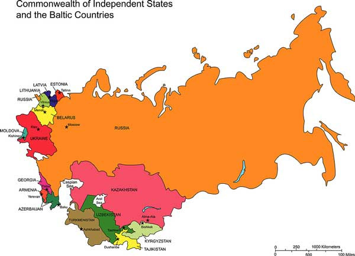

Kazakhstani foreign policy
First of all, it is very important to understand that Kazakhstani foreign policy is multivectoral. The main reason of it is country's geopolitical location. Foreign polisy of our country has 5 major directions, among them are relationships with the United States and European Union, China, Customs Union and the remaining countries of the former Soviet Union.
Kazakhstan and the United States
The United States and the Republic of Kazakhstan established diplomatic relations on December 16, 1991, when the United States was the first country to acknowledge the independence of the former Soviet republic. The United States was the first country to recognize Kazakhstan’s independence in December 1991 and was a critical player in assisting Kazakhstan to get rid of its strategic nuclear weapons. At the “2012 Seoul Nuclear Security Summit” in March 2012, Presidents Obama and Nazarbayev reaffirmed bilateral cooperation in the areas of nuclear nonproliferation. President Obama went on to say, "The close relationship between our two countries extends beyond just the nuclear security issue, so this meeting will give us an opportunity to discuss the cooperation that we have built over the last several years with respect to Afghanistan and the help we've received in supplying our troops and helping to assist the Afghan government."
In addition to nuclear nonproliferation, the U.S. and Kazakhstan maintain strategic economic and political relations. The U.S. oil company, Chevron, became the first major investor in Kazakhstan in 1993 with the establishment of the TengizChevroil joint venture. Through the Bolashak Program, Kazakh students study overseas. Currently, there are over 3,000 Bolashak students around the world of which 800 are studying in 42 universities of the United States.
Relationships with the European Union
The Partnership and Cooperation Agreement (PCA) with Kazakhstan has been the legal framework for European Union-Kazakhstan bilateral relations since it entered into force in 1999. In November 2006 a Memorandum of Understanding on cooperation in the field of energy between the EU and Kazakhstan has been signed establishing the basis for enhanced cooperation.
The future European Commission assistance will focus on the following priority areas: promotion of the ongoing reform process at political, economic, judiciary and social level, infrastructure building, and cooperation in the energy sector.
The overall EU cooperation objectives, policy responses and priority fields for Central Asia can be found in the EC Regional Strategy Paper for Central Asia 2007-2013. In addition to the assistance under the Development Cooperation Instrument (DCI), Kazakhstan participates in several ongoing regional programs.
Membership in the Customs Union
In 2010, Kazakhstan entered into the Customs union with Belarus and Russia. The first, relatively easy step in the implementation of the Customs union was the adoption of a common external tariff, with varying exceptions in each of the three member countries. International experience has shown, that successful preferential trade arrangements are frequently based on “deep integration,” that is, integration that goes beyond the tariff preferences. In fact, the goals of the Customs union are much more ambitious. The governments of the member countries are working to achieve deep integration in key areas.

One area where the governments are working to deepen integration is in trade facilitation. It is the announced intention of the governments to eliminate customs posts between Russia and Kazakhstan and to reduce the costs of other aspects of trade between the countries - such as the number of required documents and the difficulty of obtaining them.
Another key area is the reduction of nontariff barriers (NTBs). Technical regulations, including sanitary and phyto-sanitary measures, are cited by exporters in Kazakhstan as significant cost-increasing barriers on their exports to Russia. The governments are working to harmonise technical regulations and to introduce mutual recognition agreements.
Clearly, successfully addressing the challenge of reducing trade-facilitation costs and nontariff barriers is a major task that requires significant institutional development both in Kazakhstan and in the other member countries of the customs union. It is very difficult, however, to assess the probability of success that the customs union will have with the reduction of these costs.
China and Kazakhstan
The bilateral relations between the Republic of Kazakhstan and the People's Republic of China have assumed an important strategic role with expanding commercial and strategic cooperation between the two nations.
China and Kazakhstan have promoted a rapid expansion of commerce and partnership over economic development, especially in harnessing Kazakhstan's oil, natural gas, minerals and other major energy resources. Owing to rapidly expanding domestic energy needs, China has sought to obtain a leading role in cultivating and developing energy industries in Kazakhstan. Along with operating four smaller oil fields, the China National Petroleum Corporation in 2005 bought Petrokazakhstan, that was the former Soviet Union's largest independent oil company, for USD 4.18 billion and spent another USD 700 million on a pipeline that will take the oil to the Chinese border. Petrokazakhstan was the largest foreign purchase ever by a Chinese company.
In 2009 China lent $10 billion to Kazakhstan and gained a stake in MangistauMunaiGas.
On October 16th, 2013, the Kazakhstan Majilis and China's Standing Committee of the National People's Congress (NPCSC) signed a memorandum of understanding. The agreement is the most important legislations signed between the two nations that further bilateral relations.
Commonwealth of Independent States (CIS)
The Commonwealth of Independent States (CIS), consisting of all the former Soviet republics except for the Baltic countries, initially represented Kazakhstan’s most important regional institution after the USSR’s disintegration. On December 16, 1991, Kazakhstan became the last of the 15 former Soviet republics to declare the country’s independence. Five days later, Kazakhstan joined the new CIS, which effectively marked the end of the Soviet Union.

At its founding in 1991, President Nursultan Nazarbayev backed the creation of the CIS on the grounds that the “future relations of independent states will be underpinned by a spiritual unity of nations, fostered by many generations of our ancestors.” Kazakhstan proposed adoption of the CIS Development Concept and an associated action plan to outline priority areas for long-term cooperation among CIS members.
The CIS itself initially played a useful role in facilitating a “civilized divorce” among its members. For the most part, the leaders of Kazakhstan and the other newly independent former Soviet republics accepted the USSR’s administrative boundaries as their new national borders. Russian President Vladimir Putin praised the CIS for “clearly helping us to get through the period of putting in place partnership relations between the newly formed young states without any great losses and playing a positive part in containing regional conflicts in the post-Soviet area.”
The problems of achieving consensus among twelve combined with the organization’s weak, opaque, and inefficient institutions for making and implementing decisions make it difficult for the CIS to be an effective multi-national institution.